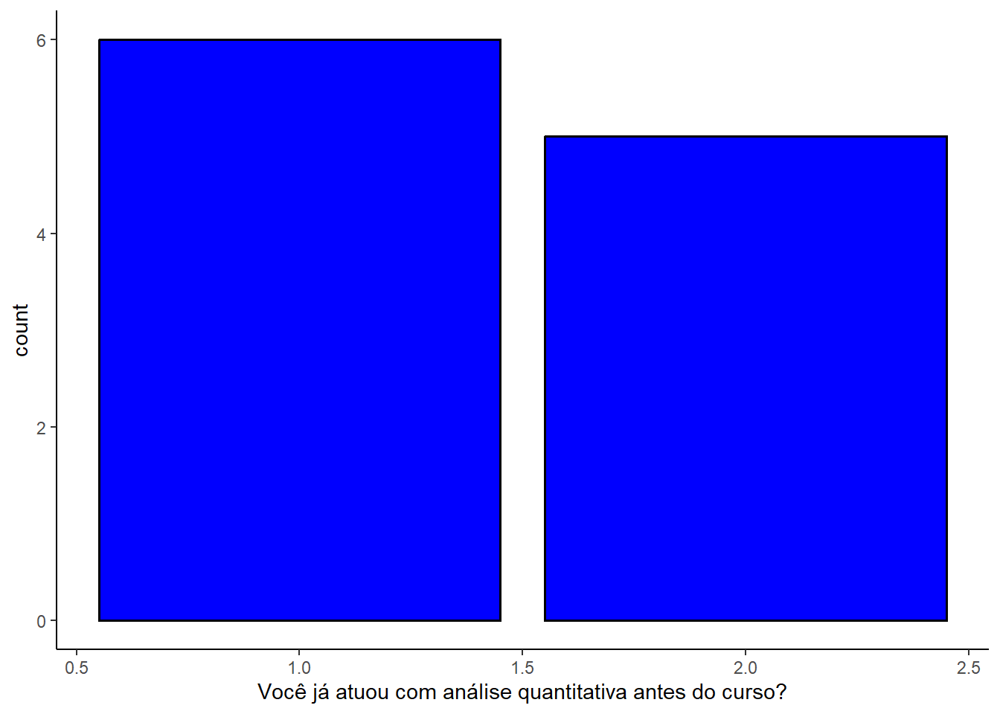
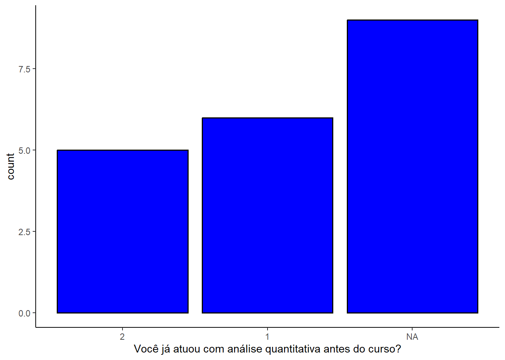

idade <- c(25, 28, 30, 45, 68, 100)
class(idade)[1] "numeric"raca <- c("negro", "negro", "branco", "indigena", "amarelo/asiatico", "branco")
class(raca)[1] "character"idade <- c(25, 28, 30, 45, 68, 100)
class(idade)[1] "numeric"raca <- c("negro", "negro", "branco", "indigena", "amarelo/asiatico", "branco")
class(raca)[1] "character"idades_banco_dados <- data.frame(idade = idade,
raca = raca)
class(idades_banco_dados)[1] "data.frame"escolaridade_character <- c("ensino médio", "ensino superior", "ensino fundamental")
escolaridade <- factor(x = escolaridade_character,
levels = c("ensino fundamental", "ensino médio", "ensino superior"))
banco_dados <- data.frame(pessoa = c("Andressa", "Heloisa", "William", "Daniel", "Anelize"),
escolaridade = c("Ensino Superior", "Ensino Médio", "Ensino Médio", "Ensino Fundamental", "Ensino Fundamental"))
# Algumas funcoes de transformacao:
# as.factor()
# as.numeric()
# as.character()
# as.data.frame()
banco_dados$escolaridade <- factor(x = banco_dados$escolaridade,
levels = c("Ensino Fundamental", "Ensino Médio", "Ensino Superior"))
class(banco_dados$escolaridade)[1] "factor"as.numeric(banco_dados$escolaridade)[1] 3 2 2 1 1mean(as.numeric(banco_dados$escolaridade))[1] 1.8vetor_logico <- c(2 == 2, 3 == 1)
vetor_numeros <- c(2, 3)
vetor_numeros_nome <- ifelse(vetor_numeros == 2, "dois", "tres")
class(vetor_logico)[1] "logical"sum(idade)[1] 296idade + idade[1] 50 56 60 90 136 200idade + 2[1] 27 30 32 47 70 102idade - idade[1] 0 0 0 0 0 0idade - 2[1] 23 26 28 43 66 98idade*idade[1] 625 784 900 2025 4624 10000idade*2[1] 50 56 60 90 136 200idade/idade[1] 1 1 1 1 1 1idade/2[1] 12.5 14.0 15.0 22.5 34.0 50.0idade^2[1] 625 784 900 2025 4624 10000sqrt(sum(idade))[1] 17.20465mean(idade)[1] 49.33333mean(idade + 15)[1] 64.33333median(idade)[1] 37.5sd(idade)[1] 29.51384sqrt(var(idade))[1] 29.51384var(idade)[1] 871.0667#install.packages("rio")
library(rio)
#import()
#read.csv()
#read.csv2()
library(readxl)Warning: package 'readxl' was built under R version 4.2.1dados_percepcao_inicial <- read_xlsx("D:/william/R/Curso Analisar e Acolher 2023.1 - Educação com Evidencias/quarto/percepcao_dados_2023.1.inicio.xlsx")
View(dados_percepcao_inicial)
head(dados_percepcao_inicial)# A tibble: 6 × 9
`Card Number` nome_e…¹ First…² Last …³ Você …⁴ De 1 …⁵ O qua…⁶ De 1 …⁷ De 1 …⁸
<chr> <chr> <chr> <chr> <chr> <chr> <chr> <chr> <chr>
1 19 alan si… alan silva A C B A B
2 1 aline d… aline de ara… B A A B B
3 2 andress… andres… de oli… <NA> <NA> <NA> <NA> <NA>
4 3 anelize… anelize beatri… B B B C A
5 4 carla m… carla marili… B B D B B
6 5 daniel … daniel kreuge… A C B B B
# … with abbreviated variable names ¹nome_estudante, ²`First name`,
# ³`Last Name`, ⁴`Você já atuou com análise quantitativa antes do curso?`,
# ⁵`De 1 a 4, o quanto você sente que compreende sobre dados quantitativos?`,
# ⁶`O quanto você precisa atuar com dados quantitativos, hoje?`,
# ⁷`De 1 a 4, o quanto avalia a sua base prévia em matemática?`,
# ⁸`De 1 a 4, o quanto avalia a sua base prévia em programação (R ou outra linguagem)?`View(idades_banco_dados)
class(idades_banco_dados)[1] "data.frame"class(idades_banco_dados$idade)[1] "numeric"idade[1][1] 25idade[c(5,1)][1] 68 25length(idade)[1] 6idade[-1][1] 28 30 45 68 100idades_banco_dados$idade[2][1] 28idades_banco_dados$idade[idades_banco_dados$raca == "branco" |
idades_banco_dados$raca == "amarelo/asiatico"][1] 30 68 100idades_banco_dados[ ,1][1] 25 28 30 45 68 100idades_banco_dados[ ,1] == idades_banco_dados$idade[1] TRUE TRUE TRUE TRUE TRUE TRUE#install.packages("tidyverse")
#install.packages("dplyr")
library(tidyverse)Warning: package 'tidyverse' was built under R version 4.2.2── Attaching packages ─────────────────────────────────────── tidyverse 1.3.2 ──
✔ ggplot2 3.4.0 ✔ purrr 1.0.1
✔ tibble 3.1.8 ✔ dplyr 1.0.10
✔ tidyr 1.2.1 ✔ stringr 1.5.0
✔ readr 2.1.3 ✔ forcats 0.5.2 Warning: package 'ggplot2' was built under R version 4.2.2Warning: package 'tibble' was built under R version 4.2.1Warning: package 'tidyr' was built under R version 4.2.2Warning: package 'readr' was built under R version 4.2.2Warning: package 'purrr' was built under R version 4.2.2Warning: package 'dplyr' was built under R version 4.2.2Warning: package 'stringr' was built under R version 4.2.2Warning: package 'forcats' was built under R version 4.2.2── Conflicts ────────────────────────────────────────── tidyverse_conflicts() ──
✖ dplyr::filter() masks stats::filter()
✖ dplyr::lag() masks stats::lag()library(dplyr)
banco_filtrado <- idades_banco_dados %>%
filter(raca == "negro") %>%
mutate(RACA = raca) %>%
rename("idade das pessoas" = idade)glimpse(dados_percepcao_inicial) # ve o banco de dadosRows: 20
Columns: 9
$ `Card Number` <chr> …
$ nome_estudante <chr> …
$ `First name` <chr> …
$ `Last Name` <chr> …
$ `Você já atuou com análise quantitativa antes do curso?` <chr> …
$ `De 1 a 4, o quanto você sente que compreende sobre dados quantitativos?` <chr> …
$ `O quanto você precisa atuar com dados quantitativos, hoje?` <chr> …
$ `De 1 a 4, o quanto avalia a sua base prévia em matemática?` <chr> …
$ `De 1 a 4, o quanto avalia a sua base prévia em programação (R ou outra linguagem)?` <chr> …names(dados_percepcao_inicial) # ve os nomes das variaveis[1] "Card Number"
[2] "nome_estudante"
[3] "First name"
[4] "Last Name"
[5] "Você já atuou com análise quantitativa antes do curso?"
[6] "De 1 a 4, o quanto você sente que compreende sobre dados quantitativos?"
[7] "O quanto você precisa atuar com dados quantitativos, hoje?"
[8] "De 1 a 4, o quanto avalia a sua base prévia em matemática?"
[9] "De 1 a 4, o quanto avalia a sua base prévia em programação (R ou outra linguagem)?"# dados_percepcao_inicial <- dados_percepcao_inicial %>%
# rename("primeiro_nome" = `First name`)dados_percepcao_inicial <- dados_percepcao_inicial %>%
mutate(primeiro_nome = `First name`)dados_percepcao_inicial <- dados_percepcao_inicial %>%
mutate(
atuacao_analise = case_when(
`Você já atuou com análise quantitativa antes do curso?` == "A" ~ 1, #"sim"
`Você já atuou com análise quantitativa antes do curso?` == "B" ~ 0, #"nao"
T ~ as.numeric(NA)
),
compreensao_dados = case_when(
`De 1 a 4, o quanto você sente que compreende sobre dados quantitativos?` == "A" ~ 1,
`De 1 a 4, o quanto você sente que compreende sobre dados quantitativos?` == "B" ~ 2,
`De 1 a 4, o quanto você sente que compreende sobre dados quantitativos?` == "C" ~ 3,
`De 1 a 4, o quanto você sente que compreende sobre dados quantitativos?` == "D" ~ 4,
T ~ as.numeric(NA)
)
)dados_percepcao_inicial <- dados_percepcao_inicial %>%
mutate(across(.cols = c(`Você já atuou com análise quantitativa antes do curso?`,
`De 1 a 4, o quanto você sente que compreende sobre dados quantitativos?`,
`O quanto você precisa atuar com dados quantitativos, hoje?`,
`De 1 a 4, o quanto avalia a sua base prévia em matemática?`,
`De 1 a 4, o quanto avalia a sua base prévia em programação (R ou outra linguagem)?`),
.fns = ~case_when(.x == "A" ~ 1,
.x == "B" ~ 2,
.x == "C" ~ 3,
.x == "D" ~ 4,
T ~ as.numeric(NA))))dados_percepcao_inicial %>%
select(`De 1 a 4, o quanto você sente que compreende sobre dados quantitativos?`,
compreensao_dados) %>%
View()prop.table(table(dados_percepcao_inicial$`Você já atuou com análise quantitativa antes do curso?`))
1 2
0.5454545 0.4545455 library(janitor)
Attaching package: 'janitor'The following objects are masked from 'package:stats':
chisq.test, fisher.testdados_percepcao_inicial %>% tabyl(`Você já atuou com análise quantitativa antes do curso?`) %>% flextable::flextable()Você já atuou com análise quantitativa antes do curso? | n | percent | valid_percent |
|---|---|---|---|
1 | 6 | 0.30 | 0.5454545 |
2 | 5 | 0.25 | 0.4545455 |
9 | 0.45 |
library(ggplot2)
dados_percepcao_inicial %>%
ggplot(aes(x = `Você já atuou com análise quantitativa antes do curso?`)) +
geom_bar(fill = "blue", col = "black", size = 0.7) +
theme_classic()Warning: Using `size` aesthetic for lines was deprecated in ggplot2 3.4.0.
ℹ Please use `linewidth` instead.Warning: Removed 9 rows containing non-finite values (`stat_count()`).
dados_percepcao_inicial %>%
mutate(`Você já atuou com análise quantitativa antes do curso?` = factor(`Você já atuou com análise quantitativa antes do curso?`, levels = c(2, 1))) %>%
ggplot(aes(x = `Você já atuou com análise quantitativa antes do curso?`)) +
geom_bar(fill = "blue", col = "black", size = 0.7) +
theme_classic()